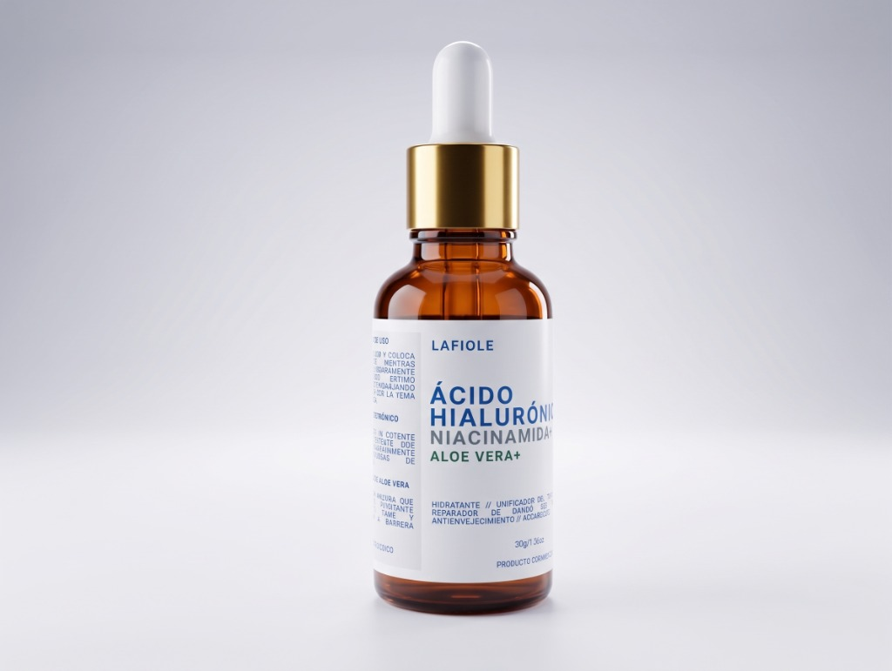

01
Ácido Hialurónico
Hidratación Profunda y JuventudConocido como el imán de humedad definitivo para tu piel, el ácido hialurónico atrae y retiene el agua, proporcionando una hidratación intensa y duradera. Actúa desde el interior para rellenar visiblemente las líneas de expresión y arrugas finas, devolviéndole a tu rostro un aspecto terso, firme y rejuvenecido.
